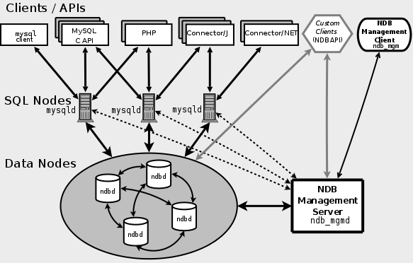

分布式数据库部署
| 版本 | 日期 | 描述 | 作者 |
|---|---|---|---|
| v0.1 | 2019年6月12日 | 初稿 | 快乐舔狗 |
| v0.2 | 2019年6月18日 | 增加容量 | 快乐舔狗 |
依赖工具
Docker
版本：18.09.6
简介：
Docker 可以让开发者打包他们的应用以及依赖包到一个轻量级、可移植的容器中，然后发布到任何流行的 Linux 机器上，也可以实现虚拟化。
容器是完全使用沙箱机制，相互之间不会有任何接口，更重要的是容器性能开销极低。
MySQL Cluster
版本：docker mysql/mysql-cluster
简介：
MySQL Cluster构建于NDB存储引擎之上，提供高度可伸缩、实时、符合ACID的事务数据库，结合了99.999%的可用性和开放源码的低TCO。
MySQL Cluster是围绕分布式、多主、服务架构设计的，所以没有单点故障，它在商品硬件上横向扩展，以提供通过SQL和NoSQL接口访问的读写密集型工作负载。
设计
传统 NDB 集群框架

本项目 Docker-Mysql-Cluster 框架

使用
查看 Docker 网络
$ docker network ls
启动容器时，可以使用 --network 标志来指定容器应连接的网络。
$ docker run --network=<NETWORK>
运行容器（dockermysql为容器的名字，bash为容器内名字）
$ docker exec -it dockermysql bash
查看正在运行的容器
$ docker ps
查看所有的容器
$ docker ps -a
安装 mysql-cluster 镜像
$ docker pull mysql/mysql-cluster
新建局域网
$ docker network create cluster --subnet=192.168.0.0/16
然后就可以启动了，先启动 management node
$ docker run -d --net=cluster --name=management1 --ip=192.168.0.2 mysql/mysql-cluster ndb_mgmd
然后启动 data nodes
$ docker run -d --net=cluster --name=ndb1 --ip=192.168.0.3 mysql/mysql-cluster ndbd
$ docker run -d --net=cluster --name=ndb2 --ip=192.168.0.4 mysql/mysql-cluster ndbd
再启动 MySQL server node
$ docker run -d -p 23333:3306 --net=cluster --name=mysql1 --ip=192.168.0.10 -e MYSQL_RANDOM_ROOT_PASSWORD=true mysql/mysql-cluster mysqld
得到 MySQL 密码
$ docker logs mysql1 2>&1 | grep PASSWORD
$ docker exec -it mysql1 mysql -uroot -p
Enter password: or7ah0H9evimWOJeNxoHOs3n[@t
利用 management node 来管理 cluster
$ docker run -it --net=cluster mysql/mysql-cluster ndb_mgm
ndb_mgm> show
利用 MySQL server node 来使用 cluster
$ docker exec -it mysql1 mysql -uroot -p
mysql> create database nexus; use nexus;
mysql> create table replicant ... engine=NDBCLUSTER;
注意：创建表的时候必须选择表的引擎为NDBCLUSTER，否则表不会进行同步